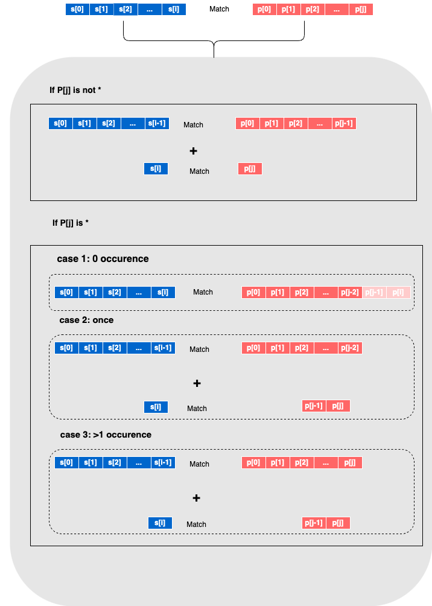

DP: Regular Expression Matching
Dynamic programming is a technique for solving problems by breaking them down into smaller sub-problems and solving each subproblem only once.
Example of Regular Expression Matching
A problem from Leetcode 10:
You are given a string s and a pattern p, implement regular expression matching with support for ‘.’ and ’*’ where:
‘.’ Matches any single character. ’*’ Matches zero or more of the preceding element. The matching should cover the entire input string (not partial).
s = "abcabc"
p1 = ".*c"
p2 = ".*d" 1. DP Table
Look at the following case.
Case 1
p1 is valid if we have a table like this:
we can see that the last cell is T, so p1 is valid.
| . | * | c | ||
|---|---|---|---|---|
| T | F | T | F | |
| a | F | T | T | F |
| b | F | F | T | F |
| c | F | F | T | T |
| a | F | F | T | F |
| b | F | F | T | F |
| c | F | F | T | T |
The table is the match result of s[0:i] and p[0:j],
so the last cell is the match result of s[0:6](the entire string) and p[0:3](the entire pattern). If the result is T, then the entire string matches the entire pattern.
How does each cell is calculated?
- the last cell, p[:3] matches s[:6], also p[:2] matches s[:5]
- it is now a dp problem, the cell’s value is the match result of p[:i] and s[:j] and the match result of p[:i-1] and s[:j-1],meaning both should be T.
Case 2
Now look at an invalid case:
p2 is invalid because .* can match abcab but d cannot match c
| . | * | d | ||
|---|---|---|---|---|
| T | F | T | F | |
| a | F | T | T | F |
| b | F | F | T | F |
| c | F | F | T | F |
| a | F | F | T | F |
| b | F | F | T | F |
| c | F | F | T | F |
Look at the last cell, p[:3] matches s[:6], but p[2] does not match s[5], so the last cell is F.
2. Formula Derivation
Two rules
- we can compare single character of the string
s[i]with 1 or 2 characters of the patternp[j],p[j-2]...., - we can query the previous results from the DP table
dp[i-1][j-1], dp[i][j-2], dp[i-1][j].
The flow
The diagramm below shows how can we calculate the match result of s[0...i] and p[0...j].

Now the formula seems to be: \[ \text{dp}[i][j] = \begin{cases} \text{true} & \text{if } p[i] \neq '*' \land s[i] \text{ matches } p[j] \land \text{dp}[i-1][j-1] = \text{true} \\ \text{true} & \text{if } p[i] = '*' \land dp[i][j-2] = \text{true} \\ \text{true} & \text{if } p[i] = '*' \land s[i] \text{ matches } p[j-1] \land \text{dp}[i-1][j-2] = \text{true} \\ \text{true} & \text{if } p[i] = '*' \land s[i] \text{ matches } p[j-1] \land \text{dp}[i-1][j] = \text{true} \\ \text{false} & \text{otherwise} \end{cases} \]
3. Code Example
Please not that in the code, when we retrieve character from the string or pattern, we need to use s[i-1] and p[j-1] instead of s[i] and p[j] as the index of the string and pattern is 0-based.
from collections import defaultdict
class Solution:
def isMatch(self,s, p):
m, n = len(s), len(p)
dp = [[False] * (n + 1) for _ in range(m + 1)]
# DP is a table with m+1 rows and n+1 columns
# we retrieve dp[i][k], i is the index of s, k is the index of p
dp[0][0] = True
for j in range(2,n+1):
if p[j-1]=='*':
dp[0][j]=dp[0][j-2]
for i in range(1, m + 1):
for j in range(1, n + 1):
if p[j-1] == '*':
dp[i][j] = dp[i][j-2] # zero occurrence
if s[i-1]==p[j-2] or p[j-2]=='.':
dp[i][j]|=dp[i-1][j] or dp[i-1][j-2] # one or more occurrence
else:
dp[i][j] = dp[i-1][j-1] and (s[i-1] == p[j-1] or p[j-1] == '.')
return dp[m][n]